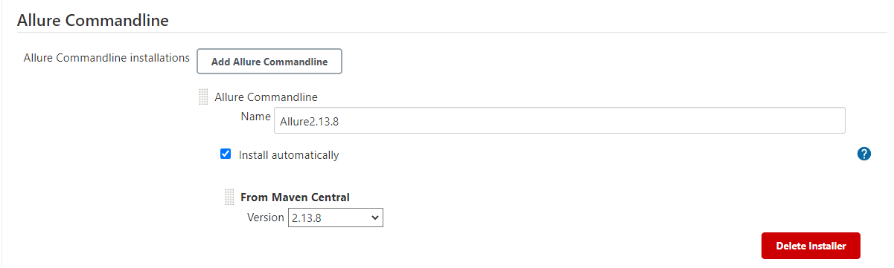
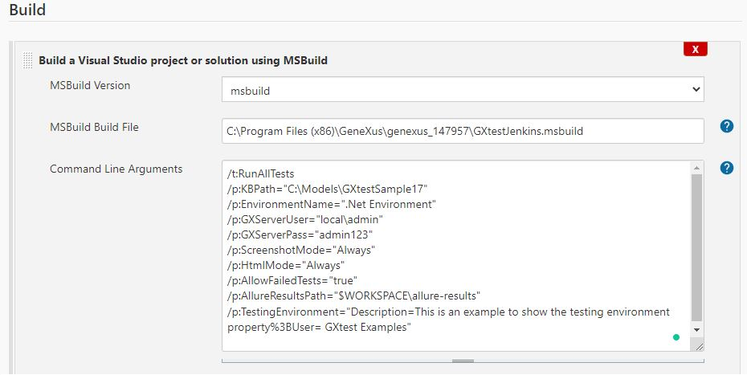
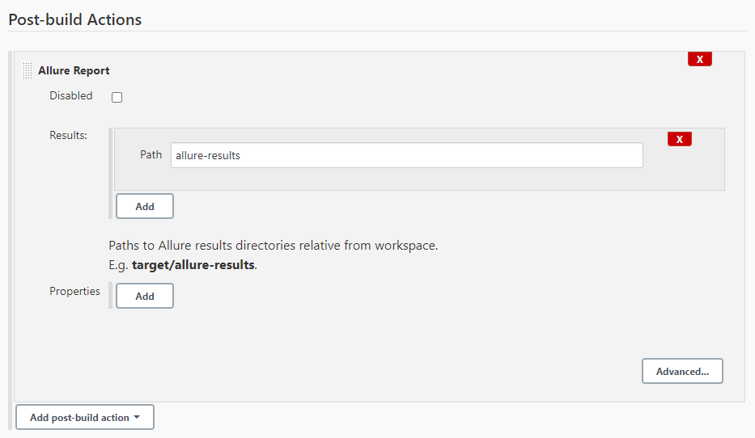
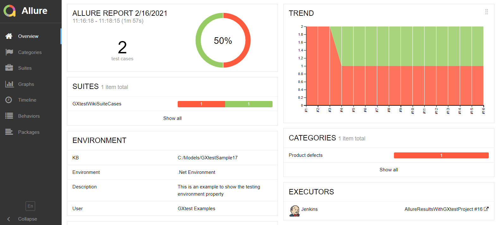
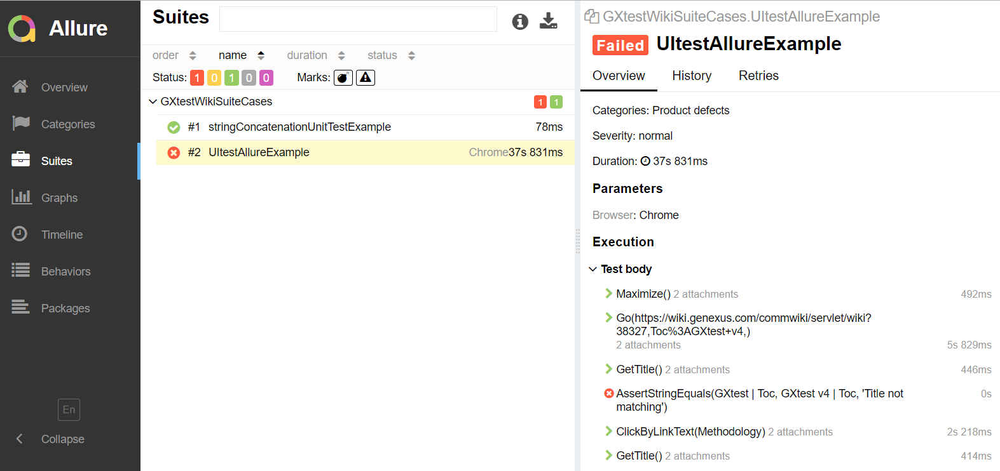
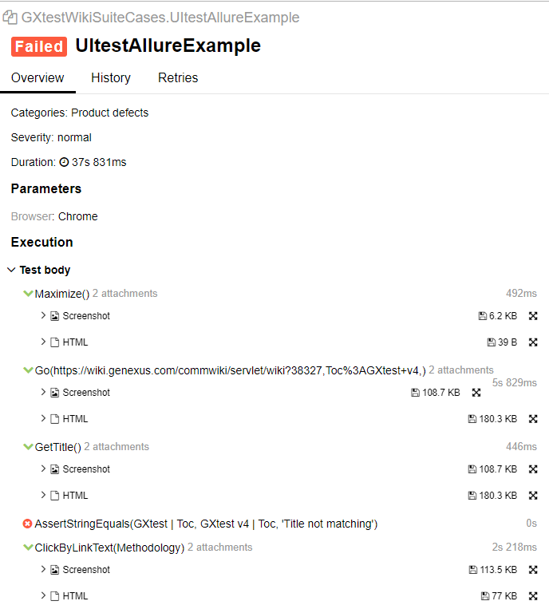
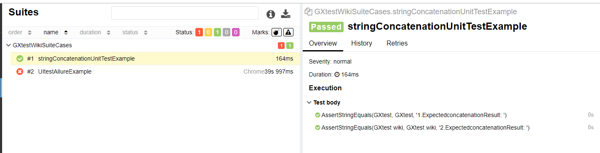
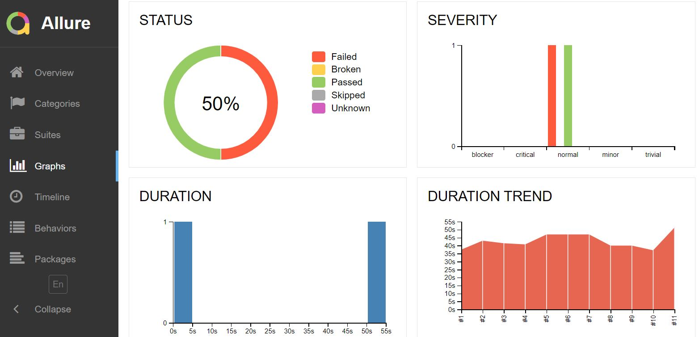

Allure Framework is an open source test result reporting tool that shows a representation of what has been tested in a web report. On this page, you can find a basic guide on how to use it to see and manage test execution results in a wider way. Anytime you run tests using MSBuild tasks, you can add an ExportResultsToAllure extra task to output the test results in an Allure compatible format: <ExportResultsToAllure TargetDir="$(AllureResultsPath)" Properties="KB=$(KBPath);Environment=$(EnvironmentName);$(TestingEnvironment)"> <Output TaskParameter="OutputFile" PropertyName="OutputFile" /> </ExportResultsToAllure> Example using JenkinsThis example uses GXtest.msbuild file (located on GeneXus IDE root folder). First, install the Allure Jenkins plugin from the plugins section in Jenkins. Then, add the Allure commandline installation in the Jenkins global tools configurations:  Note: GXtest is compatible with versions 1.x and 2.x of Allure reports format. We recommend using the latest version. Step 1) Run UI tests stepTo set the AllureResultsPath in the MSBuild build step, we recommend using the Jenkins variable $WORKSPACE, which targets the directory created by Jenkins for the current project. There are other optional parameters to set as SourceFile and Properties. Note that to see the screenshots in the Allure report you must set the parameter ScreenshotMode, HtmlMode to override the values set on KB environment properties.  By default, if a test fails, the RunTests task will be marked as failed as well. To process the test results, the additional parameter /p:AllowFailedTests="true" must be set on this step. Step 2) Add Allure reporting stepAdd a post-build step with Allure Report:  Note that the folder location here is relative to the project folder ($WORKSPACE variable). Test execution reportSelecting the "Allure Report" option, Jenkins goes to the Overview tab of the Allure Framework. The Overview page hosts several default widgets representing the basic characteristics of your project and testing environment.  Note that the environment description and the user were above added in the TestingEnvironment target at RunAllTest MSBuild task. The list of executed tests is shown in the Suites tab. Selecting the UI test example, on the right side, you can see more details about the execution such as duration, browser and its version, and the executed commands in the selected test and their screenshots if taken.  As we can set ScreenshotMode = "Always" and HtmlMode="Always", for each command, you can easily see the screenshot and HTML page when the command was executed:  Selecting the unit test example, you can see the execution information and the assertion details:  In the Graphs tab, you can see different statistics and trends collected from the test results  For more details check the Allure Report structure. See the execution video of this example in Jenkins
AvailabilityThis feature is available since GeneXus 17 upgrade 2. |
| Backlinks | |
| Export test results to Allure in Jenkins (GeneXus 17 upgrade 2) | Toc:GXtest v4 |